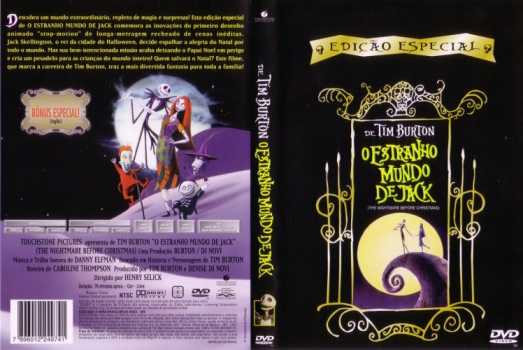
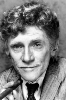

Outro Título:The Nightmare Before Christmas
País:United States, 76 minutos
Idiomas falados:Espanhol, Inglês, Português
Gênero(s):Fantasia, Animação, Família
Diretor(s):Henry Selick
Escritor(es):Caroline Thompson
Codec:MPEG-2 (DVD)
Número: 5844


Certificado:L
Sinopse:
Jack Skellington, o Rei das Abóboras, se cansa de fazer o Dia das Bruxas todos os anos e deixa os limites da cidade. Por acaso, acaba atravessando o portal do Natal, onde vê a alegria do espírito natalino. Ao retornar para a Cidade do Halloween, sem ter compreendido o que viu, ele começa a convencer os cidadãos a sequestrarem o Papai Noel e fazerem seu próprio Natal. Apesar de sua leal namorada Sally ser contra, o Papai Noel é capturado e os fatos mostrarão que Sally estava certa o tempo todo.
Elenco: 


Tipo de mídia: DVD5,
Legendas: Espanhol, Inglês, Português, Sem Legendas
Alugado: Não
Tela: Anamorphic Widescreen